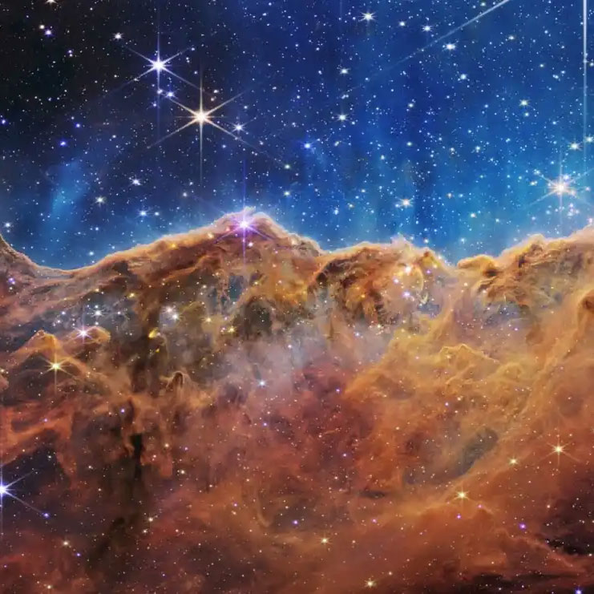
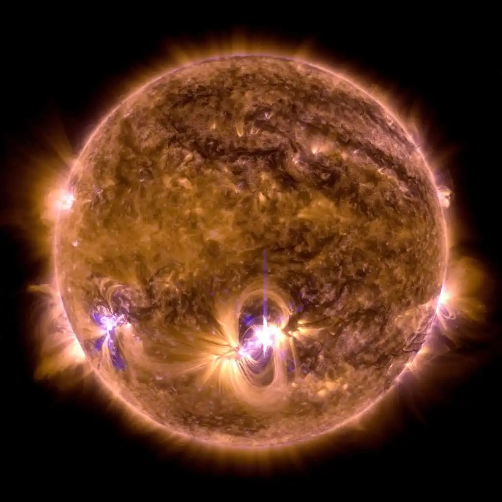
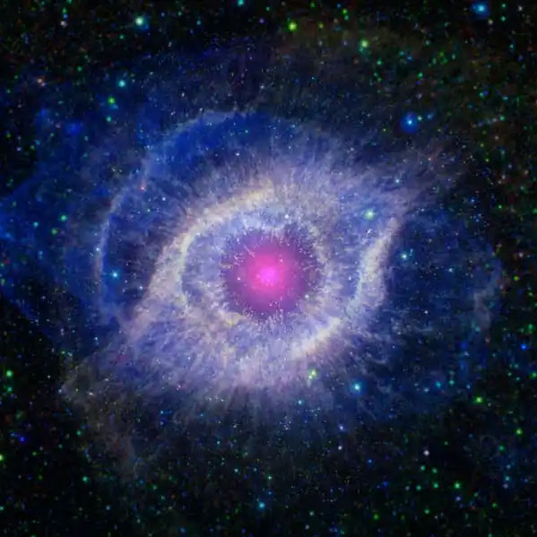

Astronomers estimate that the universe could contain up to one septillion stars – that’s a one followed by 24 zeros. Our Milky Way alone contains more than 100 billion, including our most well-studied star, the Sun.
Stars are giant balls of hot gas – mostly hydrogen, with some helium and small amounts of other elements. Every star has its own life cycle, ranging from a few million to trillions of years, and its properties change as it ages.
| Birth | Life | Death |
|  |  |  |
Stars form in large clouds of gas and dust called molecular clouds. Molecular clouds range from 1,000 to 10 million times the mass of the Sun and can span as much as hundreds of light-years. Molecular clouds are cold which causes gas to clump, creating high-density pockets. Some of these clumps can collide with each other or collect more matter, strengthening their gravitational force as their mass grows. Eventually, gravity causes some of these clumps to collapse. When this happens, friction causes the material to heat up, which eventually leads to the development of a protostar – a baby star. Batches of stars that have recently formed from molecular clouds are often called stellar clusters, and molecular clouds full of stellar clusters are called stellar nurseries. |
At first, most of the protostar’s energy comes from heat released by its initial collapse. After millions of years, immense pressures and temperatures in the star’s core squeeze the nuclei of hydrogen atoms together to form helium, a process called nuclear fusion. Nuclear fusion releases energy, which heats the star and prevents it from further collapsing under the force of gravity. Astronomers call stars that are stably undergoing nuclear fusion of hydrogen into helium main sequence stars. This is the longest phase of a star’s life. The star’s luminosity, size, and temperature will slowly change over millions or billions of years during this phase. Our Sun is roughly midway through its main sequence stage. |
At the beginning of the end of a star’s life, its core runs out of hydrogen to convert into helium. The energy produced by fusion creates pressure inside the star that balances gravity’s tendency to pull matter together, so the core starts to collapse. But squeezing the core also increases its temperature and pressure, making the star slowly puff up. However, the details of the late stages of the star’s death depend strongly on its mass. A low-mass star’s atmosphere will keep expanding until it becomes a subgiant or giant star while fusion converts helium into carbon in the core. (This will be the fate of our Sun, in several billion years.) Some giants become unstable and pulsate, periodically inflating and ejecting some of their atmospheres. Eventually, all the star’s outer layers blow away, creating an expanding cloud of dust and gas called a planetary nebula. |